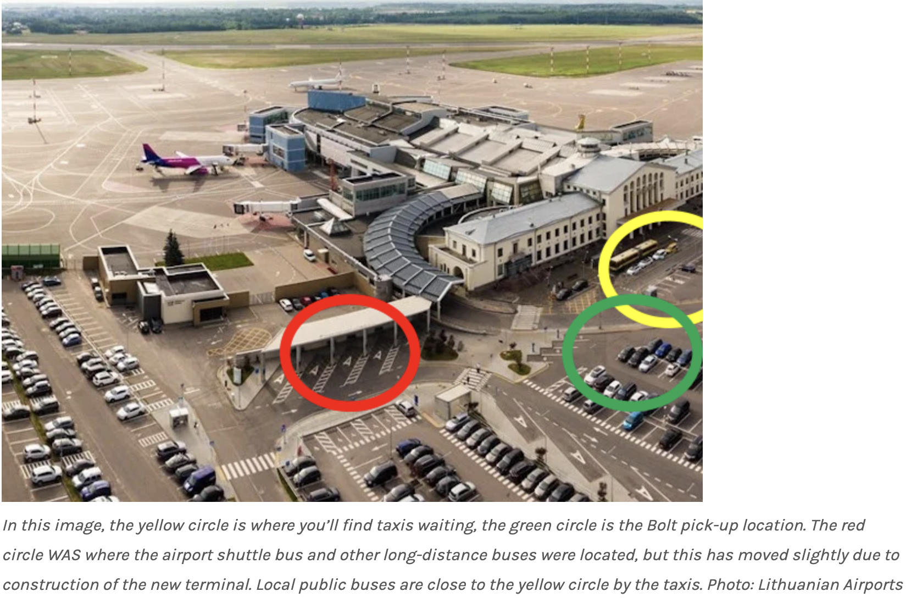
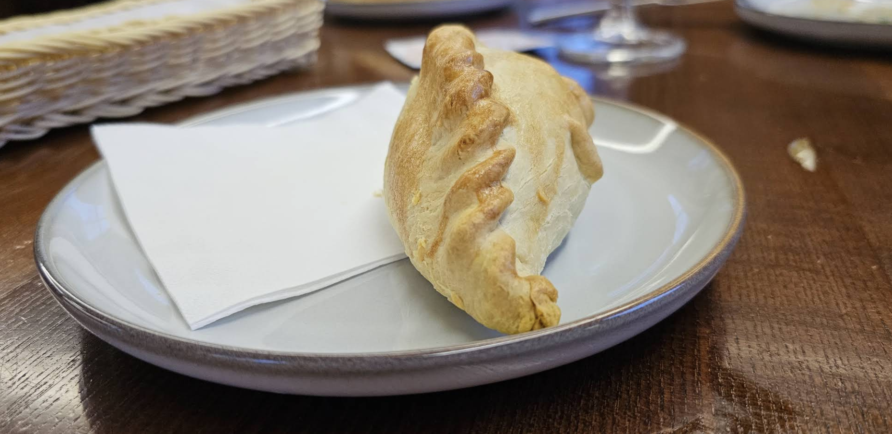
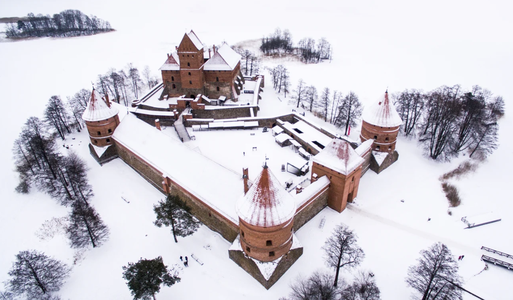

Rusn 309: Week 1
Week 1
- Wednesday, June 18: arrival in Vilnius

- Thursday, June 19:
9:00AM Please meet in the hotel lobby at (Comfort Hotel)
(distribution of emergency cards and petty cash)
Walk to the EHU Campus
- 9:30AM Orientation/tour of EHU.
- 10:00AM—11:40AM Russian Language class
- 11:40AM—13:30PM Lunch Break (vouchers for students ?)
https://www.tripadvisor.com/Restaurant_Review-g274951-d15142060-Reviews-Pirmas_Blynas-Vilnius_Vilnius_County.html
-
14:00PM City excursion Vilnius Old Town: walking tour with guide from 2 pm to 5pm.
Meet at EHU main entrance (Savičiaus g. 17, entrance from Boksto street).
-
18:30PM Welcome dinner hosted by program director at “1863” at 18:30PM
-
Friday, June 20: first day of language instruction. Starting from today, you will have language classes every day M-F from 8:30 to 11:40. Here below, please find the schedule of lectures, assignments, and activities that pertain to Rusn 309.
Language classes are in rooms 119 and 121 from 8:30AM to 11:40AM.
Afternoon: 1st reflection assignment: write a reflection on the Vilnius Old Town city excursion.
Send it to me via email by 6 pm.

Fig. 2. Karaim dish Kibinai
-
Saturday/суббота June 21: Trakai Castle day trip
We meet at 7:45AM in the hotel lobby.
Please have your ISIC cards on you.
9:04AM Train departs Vilnius train station.
9:30AM Train arrives at Trakai station.
9:40AM A walk to the castle.
10AM The castle excursion.
12PM Lunch in Karaim restaurant Trakų dvarelis

Fig. 3. Trakai Castle in winter